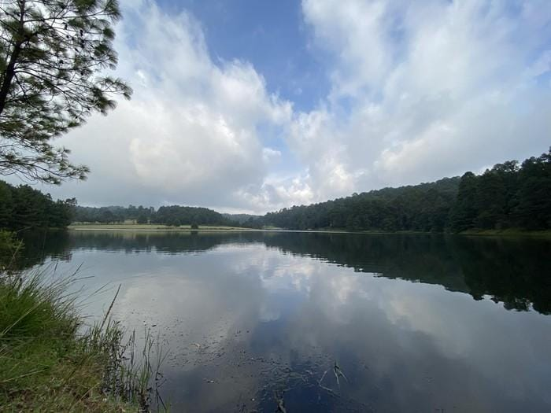
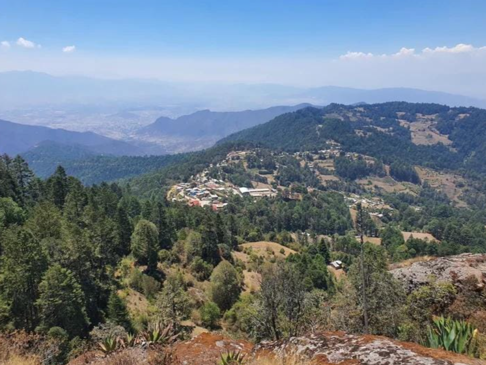

" Un destino perfecto para disfrutar, explorar y crear recuerdos. "

El Pinal del Marquesado es un lugar que destaca por sus extensas áreas verdes y sus paisajes naturales. Sus árboles altos y abundante vegetación crean un ambiente especial para quienes disfrutan estar en contacto con la naturaleza.
Ideal para el ecoturismo: El entorno natural ofrece oportunidades para disfrutar de actividades de bajo impacto, como la observación de plantas, la fotografía de paisajes y las caminatas por senderos permitidos.
Un lugar para desconectarse: Visitar un bosque como El Pinal permite alejarse del ruido y del movimiento de la ciudad. Es un espacio donde se puede disfrutar de la tranquilidad, respirar aire fresco y pasar momentos agradables.
El contacto con la naturaleza permite compartir experiencias diferentes, aprender sobre el medio ambiente y disfrutar de momentos agradables. Es una oportunidad para conocer la importancia de cuidar nuestros recursos naturales.
Durante el año, el bosque presenta diferentes paisajes. En temporada de lluvias, la vegetación adquiere tonos verdes intensos, mientras que en otras épocas se pueden apreciar cambios en el ambiente y la apariencia de los árboles.
La Laguna Negra es un lugar que invita a conocer la belleza natural de los alrededores de Valle de Bravo. Su entorno ofrece una experiencia diferente para quienes disfrutan visitar espacios al aire libre.
El encanto de sus aguas: El agua es uno de los elementos que más llaman la atención de este lugar, pues aporta una sensación de tranquilidad y forma parte importante de su paisaje.
Evitar dejar basura y respetar el entorno ayuda a conservar el paisaje y a prevenir daños en el ambiente.
Es importante no contaminar el agua, no dañar la vegetación y respetar a los animales que habitan en los alrededores.
La Laguna Negra es una invitación a vivir una aventura diferente y conocer uno de los rincones naturales que hacen especial a Valle de Bravo. Su entorno despierta la curiosidad de quienes desean explorar nuevos lugares y disfrutar de una experiencia fuera de lo común.
Es el escenario ideal para compartir una aventura, tomar fotografías increíbles y vivir experiencias que permanecerán en tu corazón. Cada visita puede convertirse en una historia especial que querrás contar una y otra vez.
